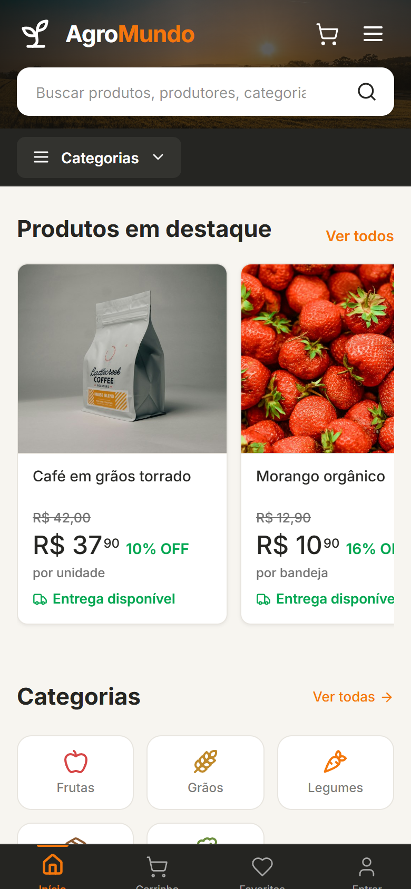
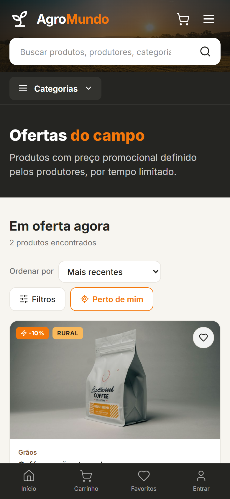
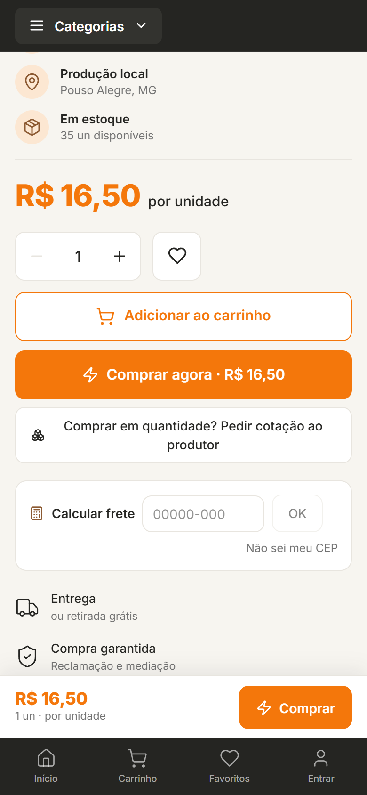
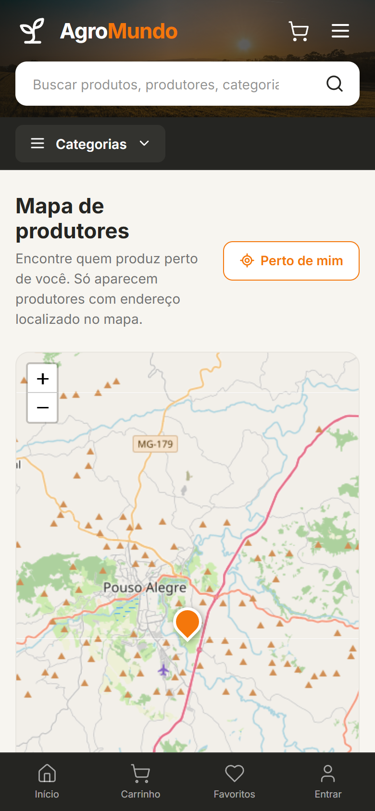
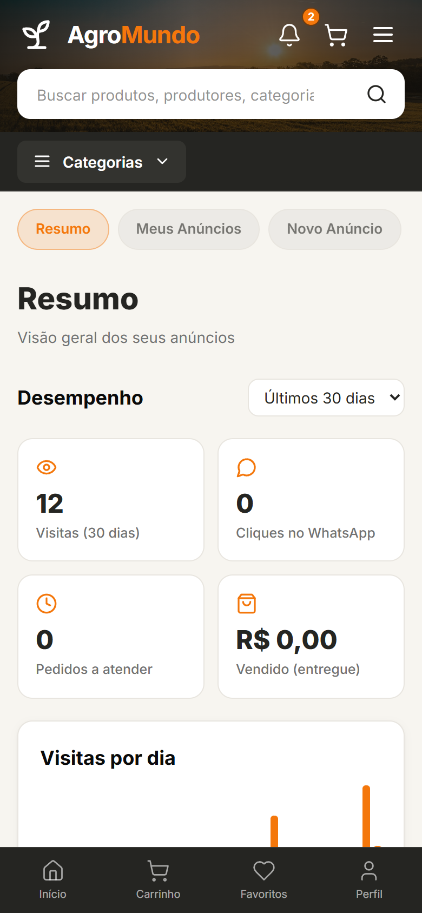
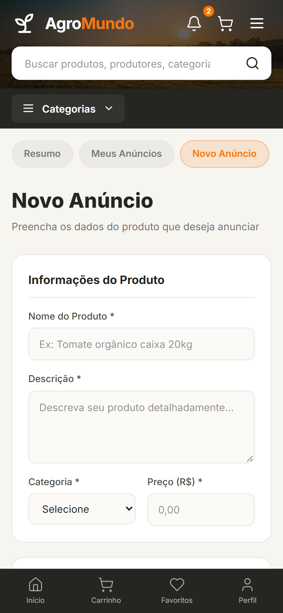
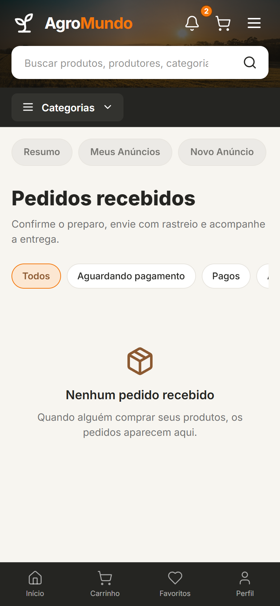

Do produtor rural
direto para você,
conectando o campo
à sua mesa.
Um marketplace que aproxima produtores rurais e compradores: vitrine, ofertas, pedidos, pagamento, entrega ou retirada, chat e avaliações, no celular ou no computador.
Cadastra fotos, preço, estoque e formas de entrega. Sem mensalidade.
Busca por categoria, ofertas ou pelo mapa de produtores perto dele.
Pedido com Pix, cartão ou boleto, chat, cotação para grandes volumes e acompanhamento da entrega.
Avaliações reais, selo de produtor verificado e mediação em caso de problema.






